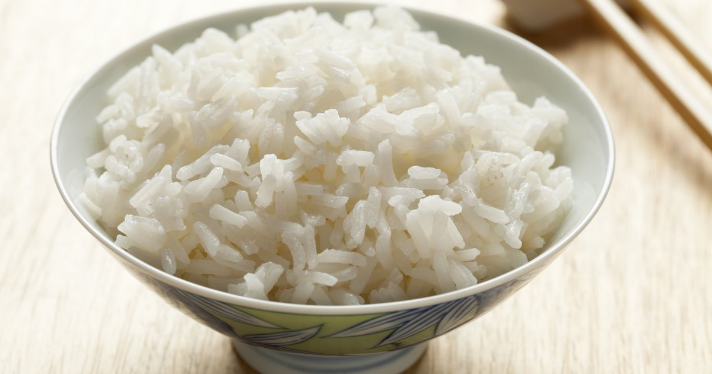

Rice
Image

Description
White yummy rice.
Ingredients
To make some rice you will need:
Water
Rice
A pot
Salt
Steps
Put water and salt on the pot.
Heat the water until it's boiling
Put the rice
Wait a while until it gets cooked
Filter the rice from the water